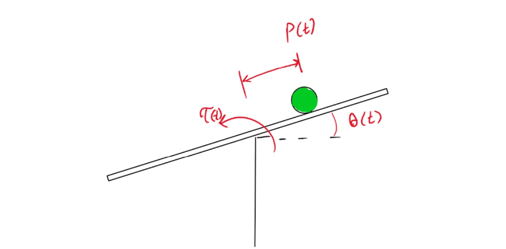
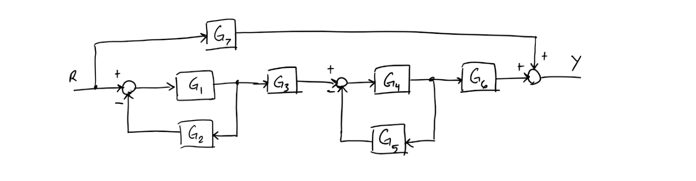
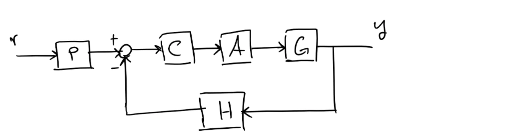
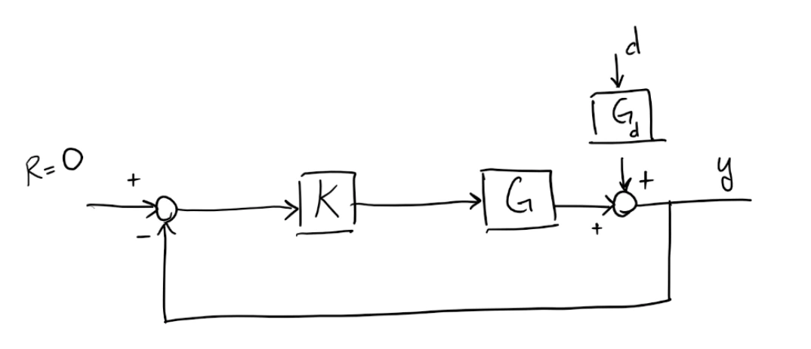

Source: MAE511_HW1.pdf (3 pages). This guide follows all five questions. The worked mathematical answers assume standard small-signal LTI modeling and negative feedback where marked. Every equation uses consistent signal labels.
Problem 1 — Invent a feedback control system
Describe an interesting feedback control system (be creative, it doesn’t need to be real).
- Describe the proposed control system using only a few sentences. Be sure to identify the plant/system, the actuator, the controller, the signal used for feedback, and the reference signal.
- Draw a block diagram and label each signal and block.
Label the five components and identify one sensor and one disturbance; then place the signs on the feedback summing junction.
Worked solution — answered by question part
Part (1) — Identify plant, controller, actuator, feedback, and reference
Example design: actively stabilized camera gimbal on a drone. The reference \(r(t)\) is the desired camera pitch angle in radians. A motor applies torque \(u(t)\) to a gimbal (the plant), an encoder measures pitch \(y_m(t)\), and a proportional–derivative controller uses the error to command the motor. Aircraft vibration is the disturbance \(d(t)\). One useful idealized model is
Why it is feedback: a gust produces a nonzero angle error and thus a corrective motor torque even though the desired angle has not changed. Open-loop control would lack that correction.
Part (2) — Draw and label the control diagram
The block diagram is reference \(\to\) summing junction \(\to\) controller \(C(s)\) \(\to\) plant \(G(s)\) \(\to\) camera angle, with measured angle fed negatively to the summing junction. Here \(G(s)=1/(Js^2+bs)\), and a reasonable PD controller is \(C(s)=K_p+K_ds\) with a filtered derivative in real hardware. This identifies the plant, actuator, controller, sensor, and reference, as the assignment requests.
Self-check: Does every block/signal appear in the diagram?
Problem 2 — Ball-and-beam nonlinear state-space model
Consider the ball and beam system shown in the figure below.

The dynamics of the system can be written as [Kup15]
where \(p(t)\) is the position of the ball, \(\theta(t)\) is the angular displacement of the beam, \(\tau\) is the applied torque, \(g\) is the gravity, \(J\) is the mass moment of inertia of the beam, and \(m, r,\) and \(J_b\) are the mass, radius, and mass moment of inertia of the ball, respectively. Define the state variables as follows
Note that the argument t has been dropped but these are still functions of time.
- Place the system into a nonlinear state space form, \(\dot x=f(x,u)\), where the input, \(u\), is the torque. The definition of the state vector is \(x=[x_1,x_2,x_3,x_4]^T\).
- Find the torque required to maintain \(x_{eq}=[p_0,0,0,0]^T\). To be clear, if the position of the ball is held at a distance \(p_0\) form the hinge point, what torque is required?
- Linearize the system about the point \((x_{eq},u_{eq})\), where \(u_{eq}\) is the equilibrium torque found in the previous step. Assume the distance, \(p\) or \(x_1\), is the measurement and define the matrices \(A, B, C, D\) for the LTI state space form.
Isolate both accelerations before taking partial derivatives. Apply equilibrium conditions before evaluating the Jacobian.
Worked solution — answered by question part
Part (1) — Nonlinear state-space model
The supplied coupled equations are
Define \(M=m+J_b/r^2\), \(I(p)=mp^2+J+J_b\), \(x=[p,\dot p,\theta,\dot\theta]^T\), and input \(u=\tau\). Solve each second-order equation for its acceleration before taking derivatives:
Part (2) — Torque needed for the specified equilibrium
At \(x_e=[p_0,0,0,0]^T\), the ball has no acceleration because \(\sin0=0\), and the beam equation requires \(u_e=mgp_0\). Do not set the equilibrium torque to zero: gravity produces a moment about the hinge whenever \(p_0\neq0\).
Part (3) — Compute A, B, C, D about the equilibrium
Now define perturbations \(\delta x=x-x_e\) and \(\delta u=u-u_e\). With \(I_0=mp_0^2+J+J_b\), compute the Jacobians \(A=(\partial f/\partial x)_e\) and \(B=(\partial f/\partial u)_e\). In particular,
For the second derivative, note that differentiating \(1/I(x_1)\) also produces a term, but it multiplies the numerator \(u_e-mgp_0=0\) at the equilibrium. Thus
Since the measured output is the position \(p=x_1\), the remaining matrices are
Physical check. A small positive beam angle gives \(\ddot p\approx-(mg/M)\theta\) under the stated sign convention. Units also work: \(mg/M\) is acceleration per radian; \(1/I_0\) is angular acceleration per torque.
Self-check: Do the equilibrium accelerations vanish? Are A and B evaluated at the equilibrium?
Problem 3 — Simplify the multi-loop block diagram
Reduce/simplify the block diagram shown below into one equivalent block.

Name the two internal signals and solve their local negative-feedback equations; add the bypass G7 last.
Worked solution and reasoning
Reading the supplied drawing: \(G_7\) is a parallel feedforward path from \(r\) to the output. The first negative local loop encloses \(G_1\) with feedback \(G_2\); the second encloses \(G_4\) with feedback \(G_5\), and \(G_3,G_6\) join these loops in series. Let \(a\) denote the signal after \(G_1\), and \(b\) the signal after \(G_4\).
The output summer adds the upper feedforward and \(G_6b\):
This algebra assumes the lower input of the second summer is negative feedback, as suggested by the loop drawing. If it were marked positive, replace \(1+G_4G_5\) by \(1-G_4G_5\). The safest exam method is to write equations at each summer instead of memorizing arrows.
Self-check: Does removing local feedback recover the series path plus G7?
Problem 4 — Convert a non-unity loop into an equivalent unity loop
Change the block diagram below to have unity feedback and then simplify into one equivalent block.

Derive the original input/output ratio first. Solve F/(1+F)=Y/R to obtain an equivalent unity-feedback forward block.
Worked solution and reasoning
The prefilter \(P\) precedes the summing junction, the forward blocks are \(C\), \(A\), and \(G\), and the feedback is \(H\). Let \(F=CAG\). Then
A standard unity-feedback loop with equivalent single forward block \(F_{\rm eq}\) has \(Y/R=F_{\rm eq}/(1+F_{\rm eq})\). Solve for it:
This is an input-output equivalent, not a claim that the internal signals or robustness are unchanged. A simpler conceptual representation keeps a reference prefilter \(P/H\) and a unity loop using \(FH\), with an output scale \(1/H\), where these inverses make sense.
Self-check: Does F_eq/(1+F_eq) recover the original ratio?
Problem 5 — Disturbance-to-output transfer function
Algebraically derive the transfer function from disturbance, \(d\), to output, \(y\). This means label the various signals and then find the transfer function \(\frac{y(s)}{d(s)}\). The reference signal, R, is zero. The actual labels/names do not matter.

Set the reference to zero and write the output-summer equation before moving the feedback term.
Worked solution and reasoning
The drawing places \(K\) in series with \(G\) in a unity negative-feedback loop. The disturbance \(d\) enters the output through \(G_d\) after the plant. With the reference set to zero, \(e=-y\) and
Move the feedback term to the left and divide by \(1+GK\):
Exam check. With no feedback (\(K=0\)), the answer reduces to \(G_d\). With strong stable loop gain at the disturbance frequency, \(|S|\approx1/|KG|\) and the disturbance is suppressed.
Self-check: Does K=0 reduce Y/D to G_d?